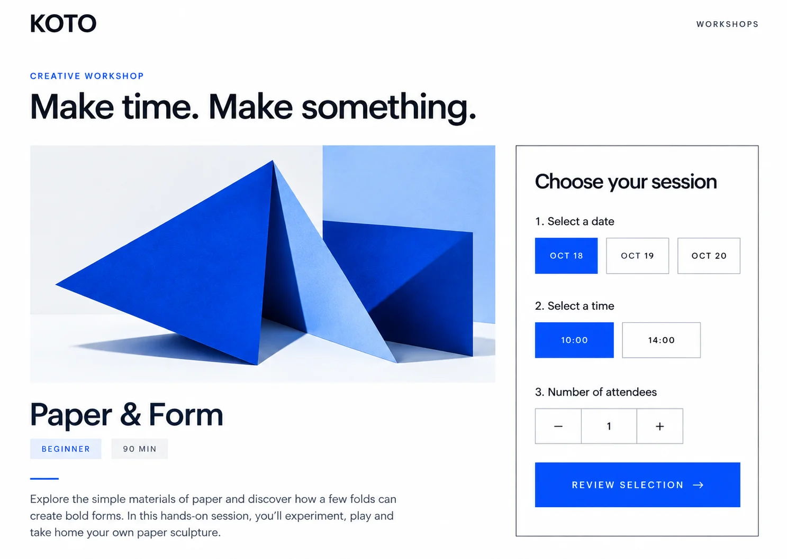

Paper & Form
一枚の紙から、かたちを見つける。
折る、重ねる、光にかざす。素材に触れながら、手を動かす時間を楽しむ架空のワークショップです。
内容・日程はデザインと操作を確認するための仮設定です。
CREATIVE WORKSHOP
一枚の紙から、かたちを見つける。
折る、重ねる、光にかざす。素材に触れながら、手を動かす時間を楽しむ架空のワークショップです。
内容・日程はデザインと操作を確認するための仮設定です。
DESIGN → CODE
この案件向けに生成した架空デザインをもとに、文字・選択肢・ボタンをHTMLで実装しました。ページ全体を画像として貼り付けたものではありません。

余白、青いアクセント、PCの2列構成を参照。実装では説明・操作を日本語化し、デモ表記と動き停止を追加しました。スマホでは縦1列、選択肢はタップしやすく再配置しています。完全なピクセル一致を主張するものではありません。
HTML/CSS/JavaScript、レスポンシブ、ラジオボタンのキーボード操作、人数制限、確認・戻る・リセットを実装。予約DB・空席取得・メール・決済・WordPressは未接続です。個人情報は入力せず、選択内容はブラウザに保存しません。